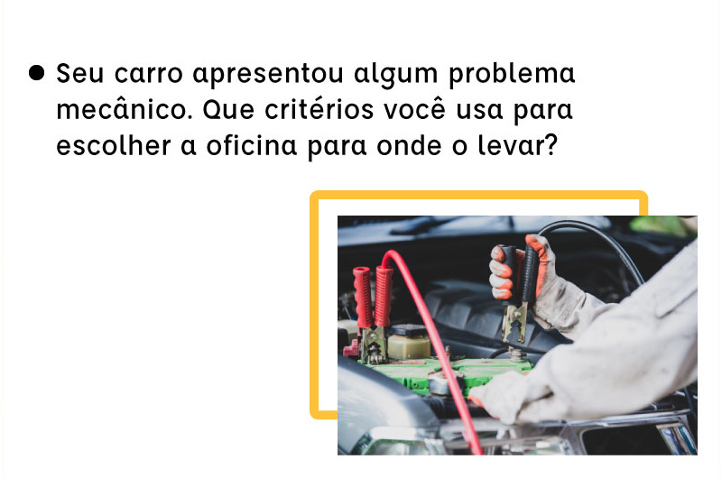

Para começar vamos fazer algumas perguntas e gostaríamos que você pensasse nas pessoas que estão por trás desses eventos:

Figura 01
Fonte: Chang Doung/Unsplash
Fonte: Chang Doung/Unsplash

Figura 02
Fonte: Freepik/Freepik
Fonte: Freepik/Freepik

Figura 03
Fonte: Jannoon/Freepik
Fonte: Jannoon/Freepik

❮
❯
Figura 04
Fonte: Jcomp/Freepik
Fonte: Jcomp/Freepik
Essas perguntas nos ajudam a compreender que, em todas as coisas boas e ruins de nossa vida, precisamos da ajuda de alguém. Por outro lado, nosso trabalho do dia a dia também impacta a vida de alguém. Somos seres sociais porque precisamos dos outros e eles de nós.
Clique nos cartões e reflita sobre as questões a seguir
Como as pessoas que compartilham seu trabalho conosco escolheram suas profissões?
Figura 05
Fonte: Peoplecreations/Freepik
Fonte: Peoplecreations/Freepik
Como descobriram que gostam de algo que passaram a fazer ao longo de suas vidas?
Figura 06
Fonte: Nat. Cancer Institute/Unsplash
Fonte: Nat. Cancer Institute/Unsplash
Como orientar uma jovem ou um jovem que ainda não descobriu seus interesses?
Figura 07
Fonte: Cottonbro/Pexels
Fonte: Cottonbro/Pexels
Onde localizar as possibilidades formativas para tantas profissões? Quantas profissões existem?
Figura 08
Fonte: Pch.Vector/Freepik
Fonte: Pch.Vector/Freepik